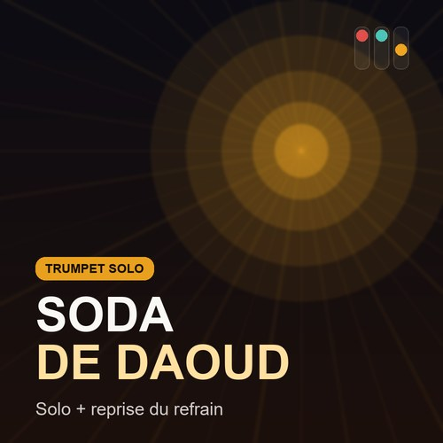

Les morceaux que je transcris et travaille phrase par phrase. Chaque piste ouvre directement sa transcription dans l'entraîneur — boucle, doigtés colorés, joue-la à ton rythme.

Solo complet + reprise du refrain à la fin — les licks parcourent quasiment toutes les notes du morceau.